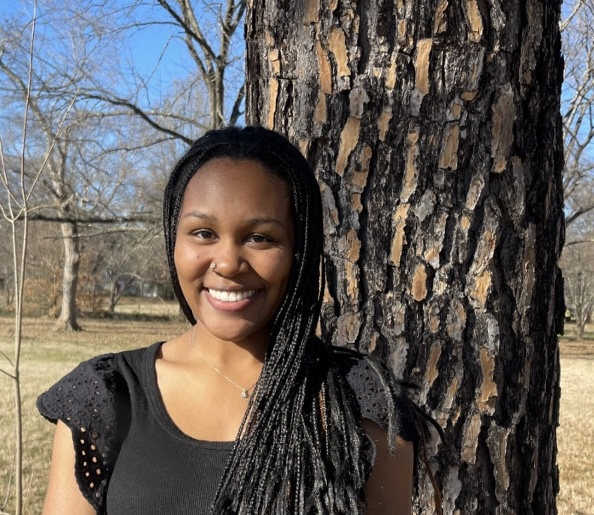
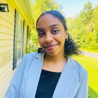

Masters and PhD Student
Ali Gorji started with the transportation modeling lab in 2025. His research focuses on applying machine learning techniques to transportation engineering problems, including traffic analysis, crash prediction, and time series analysis. Ali has developed innovative methodologies for AADT prediction and crash report analysis, leveraging advanced machine learning tools such as PyTorch, TensorFlow, and Optuna. Outside of his academic work, he enjoys exploring books on history and psychology.


David J. Quansah is a graduate research assistant who joined the Transportation Modeling Lab at North Carolina A&T in the fall of 2024. He is passionate about integrating his background in computer science into solving complex transportation problems. His research interests lie in Intelligent Transportation Systems, traffic congestion reduction, traffic signalization amongst others. Outside transportation engineering, David is a humanitarian who loves motivating others. He enjoys traveling and exploring different cultures in his free time.


Komal Gulati is currently pursuing her PhD degree in Electrical Engineering under the department of Electrical and Computer Engineering. She completed her masters (MSc) in Automotive Engineering from the University of Leeds, United Kingdom in 2020. She has worked as a research intern at the Automotive Research Association of India for one year under the Computer Vision and Robotics department on an industrial project related to building a Level 3 autonomous vehicle. Her interdisciplinary academic and research background has bagged her a Graduate Research Assistant position at the Center for Regional and Rural Connected Communities (CR2C2) at the North Carolina A&T State University. Her scientific curiosity is to work on problem statements related to urban and transportation planning that involves amalgam of Geospatial analysis and Artificial Intelligence tools with an aim to find solutions on providing mobility and equal opportunities to all groups of people in the society in various domains. Her ongoing research projects include "Optimal and Safe Routes for Freight Transportation in Rural Areas" and "Community-Oriented and Data-Driven Mobility Modeling for Rural and Disconnected Communities".


Mohammad Ashraf Ali joined Dr. Pandey's research lab as a graduate research and teaching assistant in the fall of 2024. He is passionate in development and urban transportation planning-related research and field activities that are connected to real-life public issues. Currently, he is pursuing MS in Civil Engineering (Concentration in Transportation and Regional Development) at North Carolina A&T State University. My recent research works focus on urban or regional transportation-related problems and probable solutions. Ashraf thinks of himself as a learner towards the goal of making our world more livable, inclusive and sustainable.

Rifa Tasnia joined Dr. Pandey's research lab as a graduate research and teaching assistant in the fall of 2023. Her research expertise includes mathematical models, stated preference, and revealed preference survey design. She aims to find innovative transportation solutions to reduce road congestion.


Active
Andre Flores-Fletes is an undergraduate Civil Engineering major at North Carolina A&T State University. He holds a deep interest in all things related to transportation engineering. Andre joined the Transportation Modelling Lab in the Summer of 2024 and is focused in research for optimal freight delivery routes in urban environments. He enjoys soccer and playing video games.


Kayla Stevens is an undergraduate student currently studying civil engineering at North Carolina A&T University. She is exceptionally curious about the transportation engineering industry and joined the Transportation Modelling Lab in the spring of 2025. Kayla is particularly interested in how incentivization can improve the urban travel experience, along with the improvement of roadway design and the continuous development of smartroads. During her free time she enjoys sewing, playing with her dogs and learning about places she wants to visit.

Muzan Abelrahman is currently enrolled in North Carolina A&T as an undergraduate civil engineering student. She has a strong interest in anything related to Transportation engineering particularly in how well-designed systems can make travel more efficient and accessible for everyone. Muzan joined the Transportation Modelling Lab in the Summer of 2025 and is focused on research for state of the art on auxiliary lanes between freeway interchanges. In her free time, she enjoys reading mystery thriller books and baking.

Neil Deshpande is an undergraduate Civil Engineering major at North Carolina A&T State University. He joined the transportation modeling in Spring 2025 and is interning with NCDOT Asheville in the Summer of 2025. His research interests lies in intercity bus system and he is involved as part of the CR2C2 project titled "Community-Oriented and Data-Driven Mobility Modeling For Rural and Disconnected Communities."
| Name | Graduation Year | Degree | Thesis/Research Topic | Position After Graduation | Current Position (updated Jun 2025) |
|---|---|---|---|---|---|
| Htet Phyo | 2025 | MS, Civil Engineering (Project) | Transit Accessibility and Bike Stress Mapping in Greensboro’s Transportation Network | Transportation Engineering Associate/Engineer I Trainee at NCDOT | Transportation Engineering Associate/Engineer I Trainee at NCDOT |
| Oladimeji Basit Alaka | 2025 | MS, Civil Engineering (Thesis) | Data-Driven Approaches for Sustainable and Equitable Transportation Infrastructure: A Study of Bike Network Design and Automated Shuttle Readiness. | Project Engineer with Practical Design Partners | Project Engineer with Practical Design Partners |
| Ridwan Tiamiyu | 2025 | MS, Civil Engineering (Thesis) | Optimizing Transportation Congestion Management: A Multi-Objective Approach to Equitable Tolling, Mobility Credits, and Trip Planning. | Design Engineer, Bolton & Menk, Inc. | Design Engineer, Bolton & Menk, Inc. |
| Doreen Jehu-Appiah | 2024 | MS, Computational Data Science and Engineering (Thesis) | Optimizing Demand-Responsive Transit: A Predictive Framework for Dwell Time and Integration of Value of Waiting Time | PhD in Healthcare Analytics at NCA&T | PhD in Healthcare Analytics at NCA&T |
| Hadi Khoury | 2023 | MS, Civil Engineering (Project) | Reinforcement learning approaches for traffic operations | Project Engineer I at Davenport | Project Engineer I at Davenport |
| Mohand Elbashir | 2023 | MS, Civil Engineering (Project) | Networks of Express lanes: Coordination of planning, Design, Construction, Operations, and Maintenance | -- | Project Manager at ECS Southeast |
| Bader G. Alamri | 2022 | MS, Civil Engineering (Thesis) | Dynamic tolling of express lanes | -- | Project Data Engineer | BIM & GIS | NEOM - ENOWA |